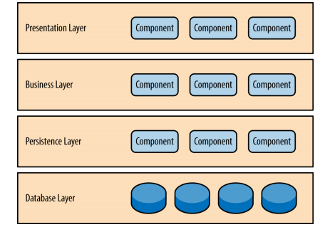
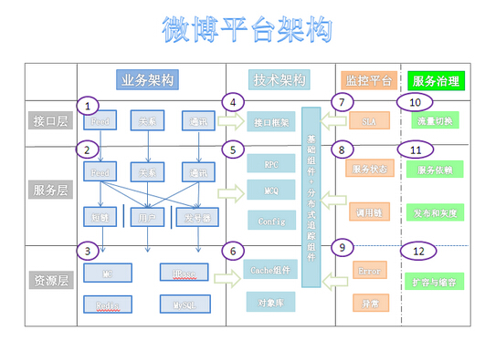
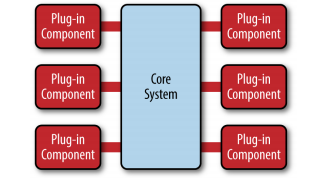

本文是我在阅读O'Reilly免费的电子书 Software Architecture Patterns过程中做的笔记。
首先这本书非常新，2015年3月30号订正后发布。其次将目前流行的几种架构详细进行了剖析和比较，除了传统的N层架构外，其它架构相当的前沿。并且，这篇小书连带封面才55页，短小精悍，值得一读。这本书的作者是 Mark Richards，有30多年行业经验，19年软件集成，企业级架构的经验，大部分是Java平台，也出版了多本书和论文。
如果你没有时间去阅读这本书，那么不妨看一下本篇文章。 我在笔记中将书中的主要知识点都记录下来。
不先进行正式的架构设计就直接开发对于程序员来说再普通不过了。没有清晰和很好的架构设计，大部分程序员和架构师实际上会采用传统的分层的架构模式， 自然地将代码模块分隔成几个包(package)。不幸地是，这种做法经常导致未能好好组织代码模块，这些模块缺乏清晰的角色，责任以及相互关系。这经常被成为大泥球反模式。
没有进行架构设计的应用程序通常是紧耦合的，玻璃心，难以改变，没有头绪。如果不理解应用的各个组件的内部工作方式的话很难看清它的架构特征。关于部署和维护的问题都很难回答：架构的规模如何？程序的性能如何？程序容易修改吗？程序的部署模型是怎么样？程序的响应如何？
架构模式可以帮助你定义程序的基本特征和行为。例如一些架构模式很自然让程序成为大规模(scalable)的程序。有些模式让程序变得灵巧敏捷(agile)。知道这些架构的特征，优点和缺点，你就可以根据你特定的业务需求和目标从容的选择一种架构模式。
作为一位架构师，你总会为自己架构选择做解释，尤其你选择一个特别的架构模式的时候。O'Reilly的这本书提供了充足的信息来为你的架构选择提供证明。
分层架构 (Layered Architecture)
它是最通用的架构，也被叫做N层架构模式(n-tier architecture pattern)。这也是Java EE应用经常采用的标准模式。基本上是个程序员都知道它。这种架构模式非常适合传统的IT通信和组织结构，很自然地成为大部分应用的第一架构选择。
模式描述
在分层架构中的组件被划分成几个层，每个层代表应用的一个功能。分层架构本身没有规定要分成多少层，大部分的应用会分成表现层，业务层，持久层和数据库层。小的应用有时候会将业务层和持久层合在一起，更大规模的应用可能会划分更多的层，比如调用外部服务的层。
每一层都有特定的角色和职能。

分层架构的一个特性就是关注分离(separation of concerns)。在层中的组件只负责本层的逻辑。组件的划分很容易让它们实现自己的角色和职责，也比较容易地开发，测试管理和维护。
关键概念
注意每一层都是封闭的。这意味着Request必须经过每一层才能到达最底下一层。
为什么不允许展示层直接访问数据库层呢，这样不是更快吗？这就是分层架构的另一个特征：层隔离(layers of isolation)。
层隔离的概念意味着你对任何一层的改变都不会影响其它层。这很好理解。
层隔离也意味着一个层的组件并不会了解其它层的实现，或者知道很少。 比如业务层不需知道你持久层是由hibernate还是mybatis实现的。
分层架构也很容易增加新的层。 比如你想将一些通用的服务重构成一个服务层，比如通用图片处理，远程账户审计等，可以在业务层下增加一个服务层。它不会对展示层造成影响，也不会改变持久层的代码。
上面的这个例子带来一个问题，因为每一层丢失封闭的，业务层不得不通过服务层访问持久层，这没有天理啊。 所以有时候你会创建一个开放的层。这意味着上一层可以绕过这一层直接访问下一层。
架构例子
我们看一下淘宝前几年的架构的例子。
这是一个标准的分层的架构。每一层中又可以详细的分成更细的层，比如服务层。
围着着这个主架构还有一些外围的产品。比如监控和审计。
架构考量
分层架构是一个可靠的通用的架构，对很多应用来说，如果你不确定哪种架构适合你的应用，可以用它作为一个初始架构。
第一个要注意的是污水池反模式(architecture sinkhole anti-pattern).这个反模式是这样的，请求流简单的穿过几个层，每层里面基本没有做任何业务逻辑，或者做了很少的业务逻辑。比如一些JavaEE例子，业务逻辑层只是简单的调用了持久层的接口，本身没有什么业务逻辑。
每一层或多或少都有可能遇到这样的场景。关键是分析这样的请求的百分比是多少。80-20原则可以帮助你决定是否正在遇到污水池反模式。如果你的请求超过20%，你应该考虑让一些层变成开放的。
另一个需要考虑的是分层架构可能会让你的应用变得庞大，即使你的展示层和业务层可以独立发布（比如展示层使用单页技术框架AngularJS, EmberJS）。
它的确会带来一些潜在的问题，比如分布模式复杂，健壮性下降，可靠性，性能和规模等。
模式分析
总体灵活性： 低
发布易用性： 低
可测试性： 高
性能： 低
规模扩展性： 低
开发容易度： 高
事件驱动架构 (Event-Driven Architecture)
事件驱动架构是一个流行的分布式异步架构模式，可以用来设计规模很大的应用程序。基于这种架构模式应用可大可小。它由高度解耦的，单一目的的事件处理组件组成，可以异步地接收和处理事件。
它包括两个主要的拓扑结构：mediator 和 broker。Mediator拓扑结构需要你在一个事件通过mediator时精心安排好几个步骤，而broker拓扑结构无需mediator，而是由你串联起几个事件。这两种拓扑架构的特征和实现有很大的不同，所以你需要知道哪一个适合你。
Mediator拓扑结构
Mediator拓扑结构适合有多个步骤的事件，需要安排处理层次。
例如购买一只股票，首先会校验这个交易，校验股票交易是否符合各种规定，将它交给一个经纪人，计算佣金，最后确认交易。所有这些都安排好各个步骤的顺序，决定它们是否串行还是并行。
它包括四个组件：event queues, an event mediator, event channels 和 event processors。
事件流是这样开始的： 客户端发送一个事件到事件队列(event queues)中，它用来将事件传送给event mediator。Event mediator收到初始的事件后，会发送额外的一些异步事件给event channels来执行处理的每个步骤。Event processors监听event channels,接收事件并处理一些业务逻辑。
在事件驱动架构中有十几个甚至几百个事件队列都很正常。模式本身没有限定事件队列的实现方式。它可能是一个消息队列，一个web service或者其它。
这里有两种事件：初始事件和处理事件。Mediator会将初始事件编排成处理事件。它没有具体的业务逻辑，只是一个协调者，负责将初始事件转化成一个或者多个处理事件。
event channels 既可以是消息队列，也可以是消息topic，大部分是消息topic，这样可以由多个消息处理器(event processor)处理同一个消息。
消息处理器包含实际的业务逻辑。每个消息处理器都是自包含的，独立的，高度解耦的，执行单一的任务。
这种模式可能有一些变种。作为架构师，你应该理解每个实现的细节，确保这种解决方案适合你的需求。
有一些开源的框架实现了这种架构，如Spring Integration, Apache Camel, 或者 Mule ESB。
Broker拓扑架构
Broker不同于上面的结构，它没有中心的Mediator。所有的事件串联起来通过一个轻量级的消息broker如RabbitMQ，ActiveMQ，HornetQ等。如果你的消息比较简单，不需要重新编排，就可以使用这种结构。
如图所示，它包含两个组件broker和 event processor。
broker中的event channel可以是消息队列，消息topic或者它们的复合形式。
每个event processor负责处理事件，发布新的事件。
架构例子

在新浪微博的早期架构中，微博发布使用同步推模式，用户发表微博后系统会立即将这条微博插入到数据库所有粉丝的订阅列表中，当用户量比较大时，特别是明星用户发布微博时，会引起大量的数据库写操作，超出数据库负载，系统性能急剧下降，用户响应延迟加剧。后来新浪微博改用异步推拉结合的模式，用户发表微博后系统将微博写入消息队列后立即返回，用户响应迅速，消息队列消费者任务将微博推送给所有当前在线粉丝的订阅列表中，非在线用户登录后再根据关注列表拉取微博订阅列表。
架构考量
事件驱动架构模式实现起来相对复杂，主要是由于它的异步和分布式特性。这可能会带来一些分布式的问题，比如远程处理的可用性，缺乏响应，broker重连等问题。
一个考虑是这种模式对于单一的逻辑缺乏原子事务。所以你需要将原子事务交给一个事件处理器执行，跨事件处理器的原子事务是很困难的。
最困难的设计之一是事件处理器的创建，维护和管理。事件通常有特殊的约定（数据值和格式）。
模式分析
总体灵活性： 高
发布易用性： 高
可测试性： 低
性能： 高
规模扩展性： 高
开发容易度： 低
微内核架构 (Microkernel Architecture)
微内核架构模式通常又被成为插件架构模式，可以用来实现基于产品的应用, 比如Eclipse，在微内核的基础上添加一些插件，就可以提供不同的产品，如C++, Java等。
模式描述
微内核包含两个组件： core system 和 plug-in modules。应用逻辑被分隔成核心系统和插件模块，可以提供可扩展的，灵活的，特性隔离的功能。

模式例子
Eclipse IDE是当之无愧的微内核的绝佳例子之一。
架构考量
微内核的架构模式可以嵌入到其它的架构模式之中。微内核架构通过插件还可以提供逐步演化的功能和增量开发。所以如果你要开发基于产品的应用，微内核是不二选择。
模式分析
总体灵活性： 高
发布易用性： 高
可测试性： 高
性能： 高
规模扩展性： 低
开发容易度： 低
微服务架构
作为单一整体的程序和面向服务架构的替代者， 微服务架构模式在工业界很快赢得了地位。这种模式还在进化之中，在业界对于它的特性和实现还有些困惑。Oreilly的小书提供了这种模式关键的概念和基础知识，用来判断这种架构是否适合你的应用。
模式描述
不管你使用何种实现风格和拓扑，有几个通用的核心概念应用在这种架构模式上。首先是分隔发布单元（separately deployed units）。
如图所示，每一个微内核的组件都被分隔成一个独立的单元。
微服务包含服务组件（service component）。不要考虑微内核的单个服务，而是最好考虑服务组件，从粒度上讲它可以是单一的模块或者一个一个大的应用程序，代表单一功能（提供天气预报或者图片存储）。
正确设计服务组件的粒度是一个很大的挑战。
另一个关键概念是微内核是分布式的。这意味着服务组件可能是远程方法（通过JMS, AMQP, REST, SOAP, RMI......等等）。分布式意味着这种模式可以建立大规模的应用。
另一个值得兴奋的特性是它可以从其它有问题的架构模式中演化出来，而不是直接创建出来等待问题发生。当你遇到一些无法解决的问题，特别是互联网企业的规模扩大时，是很好的引入微服务架构的时机。
一般会从两个模式中演化。
一种就是一开始就是整体的应用，所有的模块都是紧耦合的。另外一种是面向服务的架构模式(SOA，service-oriented architecture pattern)。SOA不是不好，但是太昂贵了，不好理解和实现。
模式拓扑
有很多实现微服务的方式。最通用最流行的三个方式是: API REST-based, applicaiton REST-based 和 中心化的消息。
API REST-based 适合网站提供小规模的，自包含的服务。很多互联网网站都提供这样的服务，比如OAuth2服务。
application REST-based不同于上面的架构，客户端看到的是web界面或者富客户端程序，而不是调用API。UI层独立发布，可以访问服务组件。
中心消息模式，它类似前面的模式，但是使用一个轻量级的消息broker取代RESTful的服务调用。这个轻量级的broker不会执行服务的编排，传输和路由，这和SOA不同，不要把它看作SOA的简化版。
架构考量
微服务架构解决了无架构的整体编码的应用的问题以及SOA的问题。同时它还可以提供实时的产品发布。
它是一个分布式架构，也会有上面分布式的问题。
模式分析
总体灵活性： 高
发布易用性： 高
可测试性： 高
性能： 低
规模扩展性： 高
开发容易度： 高
基于空间的架构 (Space-Based Architecture)
基于空间的架构有时候也被成为基于云的架构。
大部分的基于web的应用的业务流都是一样的。 客户端的请求发送给web服务器，然后是应用服务器，最后是数据库服务器。对于用户很小时不会有问题，但是负载增大时就会遇到瓶颈（想想抢火车票）。首先是web服务器撑不住，web服务器能撑住应用服务器又不行，然后是数据库服务器。通常解决方案是增加web服务器，便宜，简单，但很多情况下负载会传递给应用服务器，然后传递给数据库服务器。有时候增加数据库服务器也没有办法，因为数据库也有锁，有事务的限制。
基于空间的架构用来解决规模和并发的问题。
模式描述
基于空间的架构最小化限制应用规模的影响。这个模式来自于tuple space， 分布式共享内存想法。要想大规模，就要移除中心数据库的限制，使用可复制的内存网格。应用数据保存在所有活动的处理单元的内存中，处理单元根据应用规模可以加入和移除。因为没有中心数据库，所以数据库的瓶颈可以解决。
这种模式有两个组件：处理单元processing unit 和 虚拟化中间件virtualized middleware。
处理单元包含应用程序。小的应用程序可以使用一个处理单元，大的应用程序可以被分隔成几个处理单元。处理单元还包括数据网格。
虚拟化中间件负责管理和通信。处理数据的同步和请求。
模式考量
基于空间的架构是一个复杂而昂贵的模式。对于小型的负载可变的web应用很适合，但是对于大型的关系型数据库应用不是太适合。
模式分析
总体灵活性： 高
发布易用性： 高
可测试性： 低
性能： 高
规模扩展性： 高
开发容易度： 低
附录A
模式分析比较